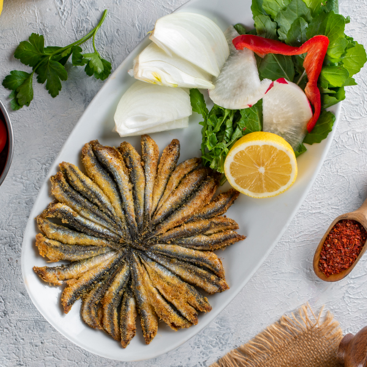

Hamsi Tava
Hamsi balığı tavası, hamsilerin şişe geçirilerek kızartılması ile hazırlanan bir tava türüdür.Basılı ilk yemek kitabı Melceü’t-Tabbâhîn'de tarifi vardır.

Tarif
Malzemeler
- 1 kilo hamsi
- 1 tatlı kaşığı tuz
- Yarım su bardağı mısır unu
- 4 yemek kaşığı sıvı yağ
Yapılışı
- Balıkların temizledikten sonra (kafasını koparıp, içini boşaltın) iyice yıkayalım ve suyunu süzelim.
- Ardından uygun bir bir kaba koyarak tuz serpelim, elimizle karıştıralım.
- Hamsileri, tabağa koyduğunuz mısır ununa güzelce bulayalım.
- Tavaya sıvı yağı koyarak fırça yardımı ile her tarafına gelmesini sağlayalım.
- Balıkları aynı yönde, sıkı bir şekilde dizerek daire oluşturalım ve tavamızı ocağa alarak yüksek ateşte 7-8 dakika pişmeye bırakalım. Balıklarınızı tavanıza göre tek seferde pişirebileceğiniz gibi 3 seferde porsiyonluk olarak da pişirebilirsiniz.
- Balıkların alt kısmı kızardıktan sonra üzerine düz bir kapak kapatalım ve fazla yağını ayrı bir kaba süzdürelim.
- Daha sonra balıklarımızın diğer yüzünü de çevirerek süzdürdüğümüz yağı tekrar üzerine gezdirelim ve kızarmaya bırakalım.
- Balıklarımızın her iki yüzeyi kızardığında servis tabağına alalım.
.png)